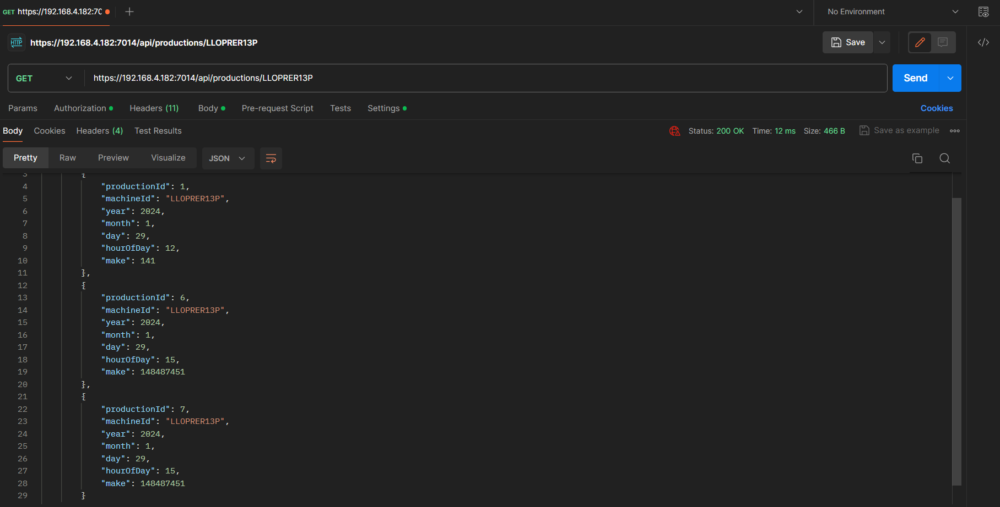

Il broker di messaggi RabbitMQ è utilizzato per garantire una comunicazione asincrona tra le macchine produttive e il sistema di raccolta dati. Ogni macchina invia i dati di produzione ad una coda nel broker, e poi i messaggi verranno letti in modo asincrono.
Il design pattern Model-View-Controller (MVC) è utilizzato nella progettazione e implementazione del servizio web ASP.NET Core. Questo pattern divide l'applicazione in tre componenti principali:
Un JSON Web Token (JWT) è composto da tre parti: Header, Payload e Signature (Firma). Ognuna di queste parti è codificata in Base64URL e concatenate con un punto ("."). Il risultato finale è una stringa che rappresenta il token completo.
-- Creating the Machines table
CREATE TABLE Machines (
machineid varchar(50) PRIMARY KEY,
location VARCHAR(255) NOT NULL
);
-- Creating the Productions table
CREATE TABLE Productions (
productionid INT PRIMARY KEY,
machineid varchar(50) FOREIGN KEY REFERENCES Machines(machineid),
year INT,
month INT,
day INT,
hourofday INT CHECK (hourofday >= 0 AND hourofday <= 24),
make int
);
create table Users(
UserId bigint identity,
Username varchar(50),
Password varchar(500),
Role varchar(500),
HashToVerify varchar(100),
SaltToVerify varchar(100)
)
insert into Machines (machineid, location)
values
('LSD23431OP', 'Milan'),
('LLOPRER13P', 'Rome')
builder.Services.AddAuthentication(JwtBearerDefaults.AuthenticationScheme) // JWT auth
.AddJwtBearer(options =>
{
options.TokenValidationParameters = new TokenValidationParameters
{
ValidateIssuer = true, // chi ha rilasciato il token
ValidateAudience = true, // portatore del token
ValidateLifetime = true, // scadenza del token
ValidateIssuerSigningKey = true, // validare chiave che ha firmato il token
ValidIssuer = builder.Configuration["Jwt:Issuer"], // chi è l'issuer?
ValidAudience = builder.Configuration["Jwt:Audience"], // chi è l'audience
IssuerSigningKey = new SymmetricSecurityKey(Encoding.UTF8.GetBytes(
builder.Configuration["Jwt:Key"])
) //chiave per firmare il token
};
});
[HttpPost("login")]
[AllowAnonymous] // non c'è bisogno di presentare un token
[ProducesResponseType(StatusCodes.Status200OK)]
[ProducesResponseType(StatusCodes.Status401Unauthorized)]
public IActionResult Login([FromBody] UserModel login)
{
Console.WriteLine("ss");
IActionResult response = Unauthorized(); // 401
var user = AuthenticateUser(login);
if (user != null)
{
Console.WriteLine("user not null");
string tokenString = GenerateJSONWebToken(user);
response = Ok(new { token = tokenString });
}
return response;
}
private User AuthenticateUser(UserModel login)
{
try
{
User user = _context.Users.FirstOrDefault(
u => u.Username.Equals(login.Username)
);
if (user.VerifyPassword(login.Password, user.HashToVerify, user.SaltToVerify))
{
return user;
}
else
{
throw new Exception("Password not verified");
}
}
catch (Exception ex)
{
// Aggiungi la gestione dell'eccezione, ad esempio il logging
Console.WriteLine($"Errore durante l'autenticazione: {ex.Message}");
return null;
}
}
Questo metodo controlla nel se l'utente esiste nel DB e verifica la password utilizzando una funzione di hash.
private string GenerateJSONWebToken(User login)
{
var securitykey = new SymmetricSecurityKey(
Encoding.UTF8.GetBytes(_config["Jwt:Key"])
);
var claims = new[] {
new Claim(JwtRegisteredClaimNames.Sub, login.Username),
new Claim(JwtRegisteredClaimNames.Jti, Guid.NewGuid().ToString()), // uid univoco del claim
new Claim("role", login.Role.ToString())
};
var token = new JwtSecurityToken(
_config["Jwt:Issuer"],
_config["Jwt:Audience"],
claims,
expires: DateTime.Now.AddMinutes(120),
signingCredentials: new SigningCredentials(
securitykey, SecurityAlgorithms.HmacSha256)
);
return new JwtSecurityTokenHandler().WriteToken(token);
}
Genera il JWT per l'utente autenticato.
Il codice è diviso in due principali sezioni: la configurazione e l'utilizzo di RabbitMQ e l'utilizzo di ADO.NET per l'accesso e la manipolazione dei dati nel database SQL Server. La gestione del multithreading è implementata attraverso l'uso di Thread.Sleep per simulare l'attesa di un'ora prima dell'elaborazione dei dati. RabbitMq creerà un'altro Thread in ascolto di messaggi da una coda specificata.

